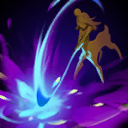

核心裝備
 黎安卓的折磨
黎安卓的折磨 黑焰火炬
黑焰火炬 死亡之帽
死亡之帽 暮夜與黎明
暮夜與黎明 女妖面紗
女妖面紗

以下為本站 7.2d 校正後的標準配置；實戰仍需依敵方陣容調整。


技能優先：Q > W > E
技能命中英雄或野怪會施加夢塵，持續造成最大生命比例魔法傷害；對大型野怪與英雄施加時會回復生命。
被動：技能命中會疊加跑速；主動旋轉香爐造成範圍魔法傷害，外圈額外造成真實傷害。

蓄力後猛擊目標區域造成魔法傷害，中心命中會造成大幅提高的傷害。
投擲種籽，落地造成魔法傷害、揭露與緩速；若沒有命中會沿地面持續滾動直到撞到敵人或地形。
讓所有帶有夢塵的敵方英雄逐漸睏倦後陷入睡眠；被傷害喚醒時會受到額外魔法傷害。
1技外圈 → 普攻 → 3技緩速 → 1技再掃
始終用一技外圈命中，疊跑速後繞開敵方技能，再回頭重複輸出。
1技命中多人 → 4技睡眠 → 2技中心 → 1技收尾
一技先替多人附上夢塵再開大，敵人睡著後用二技中心喚醒造成最高爆發。
3技遠距命中 → 4技 → 閃現接近 → 2技中心 → 1技
三技命中核心即可遠距開大，睡眠形成後閃現接二技中心與一技。
一技外圈會造成額外真實傷害，並透過被動跑速層數保持拉打。前期單挑較弱，優先完整清野接近五級，利用走位讓一技同時命中整個營地。
三技可沿地形長距離滾動，命中後附加夢塵即可開大。團戰先用一技外圈掃到多人，再大絕讓所有帶夢塵的英雄進入睡眠，等待隊友準備好再喚醒。
維持四層跑速在戰場外圈反覆進出，避免站在原地硬吃控制。二技中心傷害極高，但應在敵人睡眠、被控制或無位移時使用。
對局名單是本站依英雄機制與目前配置整理的參考，不等同固定勝率。
打野先維持標準刷野與節奏裝，只有敵方陣容或我方前排需求明顯時才調整。
觸發：敵方前排多，物件團與正面團戰會長時間卡在高生命目標上。
標準配置已經具備足夠打坦能力，維持核心即可。
觸發：敵方能在你進場或搶物件前快速把你秒掉。
骨甲降低接續傷害，適合換掉較貪輸出的副系符文。
觸發：進場或搶物件時經常被控制鏈直接中斷節奏。
堅毅提供韌性，受到硬控時也能短暫提高雙防。
觸發：敵方前排、鬥士或吸血核心能在物件團長時間回復。
黑魔禁書能由魔法傷害穩定施加重創，適合法師與軟輔處理大量治療。
觸發：我方陣容沒有可靠第一承傷點，團戰需要有人更早進場吸收注意力。
這隻英雄不適合為了「缺前排」硬改成主坦；維持自己的輸出／功能，讓巴龍路或輔助補前排更合理。
提醒：「缺前排」不代表所有打野都要改坦裝；刺客、法師與射手打野硬轉坦通常會失去英雄價值。
7.2a 打野正式版：技能名稱依 Riot Games 台灣《激鬥峽谷》莉莉亞英雄頁校正；黎安卓的折磨、黑焰火炬、死亡之帽與相位衝擊配置交叉參考 WildRiftFire 7.2a。Tier 與對局為本站綜合評級。｜v54：完成打野第三批正式版，完整套用李星固定母版，補齊起手裝、核心三件、五件成裝、技能加點、三組連招、對局與前中後期節奏。
本站於 2026-08-27 依 Patch 7.2d 重新檢查此配置。 Tier、出裝、符文與對局屬於 Wild Rift Guide 的整理與分析，不是 Riot Games 官方推薦；版本改動後會再依官方公告與實戰資料校正。